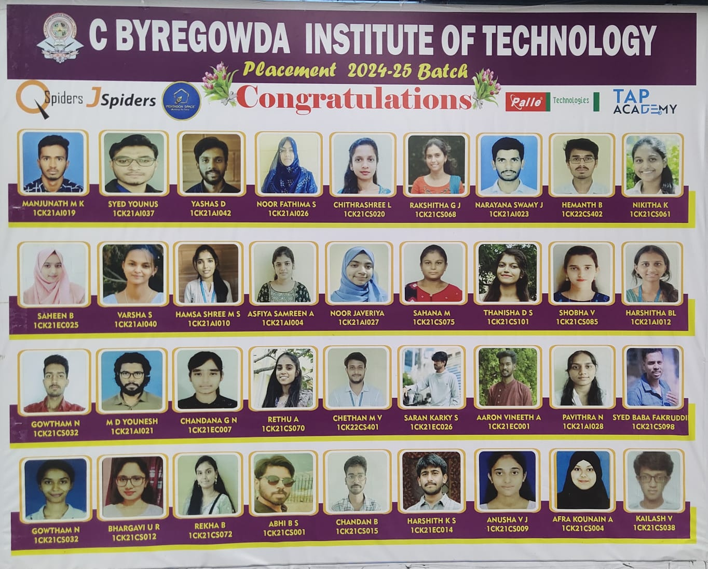
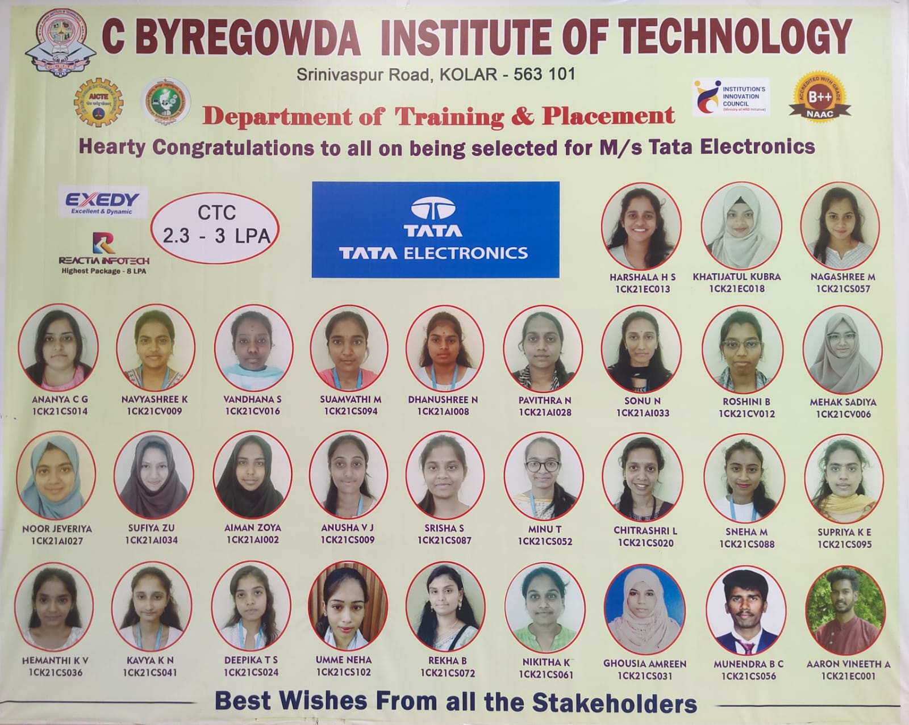

In this digital era each and every work has been digitalized, one of the fields which most influenced by this digitalization is placements its the dream of every fresher to be placed from campus, earlier students get the messages through offline mood but after pandemic the world has moved towards digitalization so its very important to have such software that provides messages to students digitally not only that this website also having facility of creating their profiles and other details such as their academics, projects etc. this system will make the job of placement officer easy by reducing the selection process of the students based on company criteria and also each and every student will get a chance of participation in campus drives. It reduces the contact gap between company and placement officer so that the selection process will go smoothly. This website have a technology which itself generates the messages based on company request. After the selection of students based on company criteria placement officer will forward a message to the selected part of students to apply for the company so that it helps to the company to get a good candidate and also to the students to get a good job.

{kind=link}